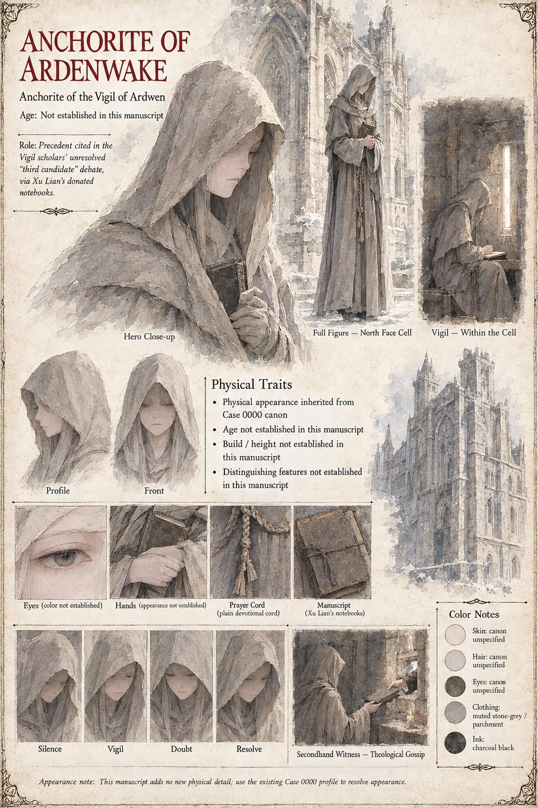

Anchorite of Ardenwake
Anchorite of the Vigil of Ardwen · the protagonist of Case 0000B · cited here secondhand
In this case the Anchorite of Case 0000B appears only as a precedent, through Xu Lian's donated notebooks: a woman walled into a cell against the cathedral's north face who lifted Valeria without once, by her own account, thinking about the blade. With the founding wielder, she is one half of the pattern Ardenwake's pilgrims and younger clerks try to extend to a healer who refused a throne twice, in a kingdom that answered the refusal with a writ of fire. The Vigil's scholars complicate the enthusiasm before it settles into doctrine, and the Keeper of Ardenwake declines to settle it from a plinth hall a mountain range away. The sheet adds no new physical detail and sends the reader back to Case 0000B for her appearance, drawing her hooded in stone-grey and parchment with a plain devotional cord and Xu Lian's notebooks in her hands.